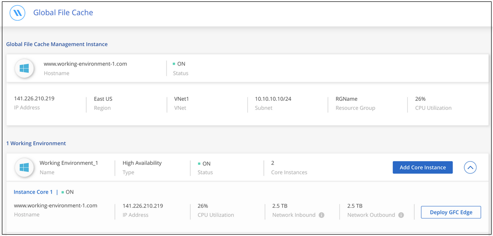
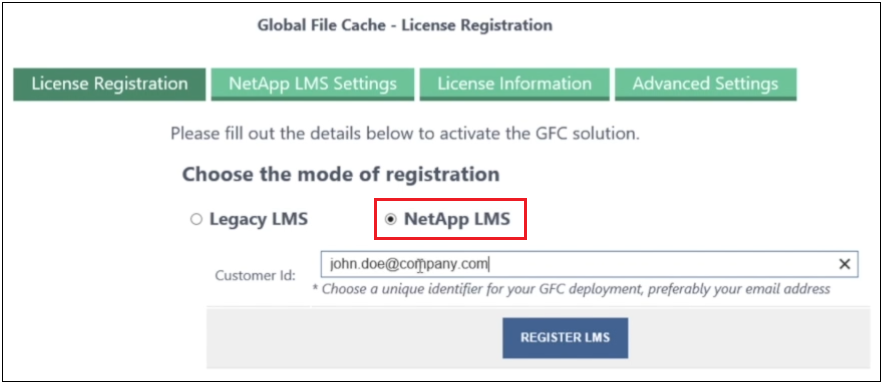

要求變更文件
要求變更文件 編輯此頁面
編輯此頁面 瞭解如何作出貢獻
瞭解如何作出貢獻快速入門
您可以使用 Cloud Manager 在工作環境中部署 Global File Cache Management Server 和 Global File Cache Core 軟體。
使用 Cloud Manager 啟用全域檔案快取
在此組態中、您將在使用 Cloud Volumes ONTAP Cloud Manager 建立您的一套作業系統的相同工作環境中、部署 Global File Cache Management Server 和 Global File Cache Core 。
觀看 "這段影片" 以查看從開始到結束的步驟。
快速入門
請依照下列步驟快速入門、或向下捲動至其餘部分以取得完整詳細資料：
在 Cloud Volumes ONTAP Azure 或 AWS 中部署支援功能、並設定 SMB 檔案共用。如需詳細資訊、請參閱 "在 Cloud Volumes ONTAP Azure 中啟動" 或 "在 Cloud Volumes ONTAP AWS 中啟動"。
將 Global File Cache Management Server 的執行個體部署在 Cloud Volumes ONTAP 與執行個體相同的工作環境中。
在 Cloud Volumes ONTAP 與執行個體相同的工作環境中、部署全域檔案快取核心的執行個體或多個執行個體、並將其加入 Active Directory 網域。
在全域檔案快取核心執行個體上設定全域檔案快取授權管理伺服器（ LMS ）服務。您需要使用 NetApp 提供的新增資信或客戶 ID 和訂閱號碼、才能啟動您的訂閱。
請參閱 "部署全域檔案快取 Edge 執行個體" 在每個遠端位置部署全域檔案快取 Edge 執行個體。此步驟並非使用 Cloud Manager 來完成。
部署 Cloud Volumes ONTAP 作為您的儲存平台
在目前版本中、 Global File Cache 支援 Cloud Volumes ONTAP 在 Azure 或 AWS 中部署的功能不全。如需詳細的先決條件、需求及部署指示、請參閱 "在 Cloud Volumes ONTAP Azure 中啟動" 或 "在 Cloud Volumes ONTAP AWS 中啟動"。
請注意下列額外的全域檔案快取需求：
-
您應該在 Cloud Volumes ONTAP 執行個體上設定 SMB 檔案共用。
如果執行個體上未設定 SMB 檔案共用、則會在安裝全域檔案快取元件期間提示您設定 SMB 共用。
在工作環境中啟用全域檔案快取
全域檔案快取精靈會引導您完成部署全域檔案快取管理伺服器執行個體和全域檔案快取核心執行個體的步驟、如下所示。
-
選擇部署 Cloud Volumes ONTAP 的運作環境。
-
在「服務」面板中、按一下 * 「啟用 GFC* 」。

-
閱讀「總覽」頁面、然後按一下 * 繼續 * 。
-
如果 Cloud Volumes ONTAP 在這個例子中沒有 SMB 共享、系統會提示您輸入 SMB 伺服器和 SMB 共用詳細資料、以便立即建立共享區。如需 SMB 組態的詳細資訊、請參閱 "儲存平台"。
完成後、按一下 * 繼續 * 以建立 SMB 共用區。

-
在「全域檔案快取服務」頁面上、輸入您打算部署的全域檔案快取 Edge 執行個體數目、然後確定您的系統符合「網路組態與防火牆規則」、「 Active Directory 設定」和「防毒排除」的要求。請參閱 "先決條件" 以取得更多詳細資料。
-
在您確認已符合要求、或您擁有符合這些要求的資訊之後、請按一下 * 繼續 * 。
-
輸入用於存取 Global File Cache Management Server VM 的管理認證資料、然後按一下 * 啟用 GFC 服務 * 。對於 Azure 而言、您可以輸入使用者名稱和密碼的認證資料；對於 AWS 、您可以選取適當的金鑰配對。您可以視需要變更虛擬機器 / 執行個體名稱。

-
成功部署全域檔案快取管理服務之後、按一下 * 繼續 * 。
-
針對全域檔案快取核心、輸入要加入 Active Directory 網域的管理員使用者認證、以及服務帳戶使用者認證。然後按一下 * 繼續 * 。
-
「全域檔案快取核心」執行個體必須部署在 Cloud Volumes ONTAP 與執行個體相同的 Active Directory 網域中。
-
服務帳戶是網域使用者、是 Cloud Volumes ONTAP 整個過程中 BUILTIN\Backup Operators 群組的一部分。

-
-
輸入您將用來存取全域檔案快取核心 VM 的管理認證資料、然後按一下 * 部署 GFC 核心 * 。對於 Azure 而言、您可以輸入使用者名稱和密碼的認證資料；對於 AWS 、您可以選取適當的金鑰配對。您可以視需要變更虛擬機器 / 執行個體名稱。

-
成功部署全域檔案快取核心之後、按一下 * 移至儀表板 * 。

儀表板顯示管理伺服器執行個體和核心執行個體均為 * 開啟 * 且正常運作。
取得全域檔案快取安裝授權
若要使用全域檔案快取、您必須先在全域檔案快取核心執行個體上設定全域檔案快取授權管理伺服器（ LMS ）服務。您需要提供您的新增資信或客戶 ID 和訂閱編號、才能啟動您的訂閱。
在此範例中、我們會在剛剛部署於公有雲的核心執行個體上設定 LMS 服務。這是設定 LMS 服務的一次性程序。
-
使用下列 URL 開啟 Global File Cache Core （您指定為 LMS 服務的核心）上的 Global File Cache License Registration （全域檔案快取授權登錄）頁面。將 <ip_address> 替換為全域檔案快取核心的 IP 位址：https://<ip_address>/lms/api/v1/config/lmsconfig.html[]
-
按一下 * 「 Continue to this website （ not recommended ）（繼續前往此網站（不建議））」 * 繼續。隨即顯示頁面、可讓您設定 LMS 或檢查現有的授權資訊。

-
選擇登錄模式：
-
「 NetApp LMS 」適用於向 NetApp 或其認證合作夥伴購買 NetApp Global File Cache Edge 授權的客戶。（偏好）
-
「老舊 LMS 」適用於透過 NetApp 支援取得客戶 ID 的現有或試用客戶。（此選項已過時。）
-
-
在此範例中、按一下 * NetApp LMS* 、輸入您的客戶 ID （最好是您的電子郵件地址）、然後按一下 * 註冊 LMS* 。

-
請查看 NetApp 的確認電子郵件、其中包含您的 GFC 軟體訂閱編號和序號。

-
按一下「 * NetApp LMS 設定 * 」標籤。
-
選擇 * GFC 授權訂閱 * 、輸入您的 GFC 軟體訂閱號碼、然後按一下 * 提交 * 。

您會看到一則訊息、指出您的 GFC 授權訂閱已成功註冊並啟動 LMS 執行個體。任何後續購買項目都會自動新增至 GFC 授權訂閱。
-
您也可以按一下 * 授權資訊 * 索引標籤、檢視所有的 GFC 授權資訊。
如果您確定需要部署多個全域檔案快取核心來支援組態、請按一下儀表板中的 * 「 Add Core Instanced* （新增核心執行個體 * ）」、然後依照部署精靈的指示進行。
完成核心部署之後、您需要 "部署全域檔案快取 Edge 執行個體" 在您的每個遠端辦公室。
部署其他核心執行個體
如果您的組態因為大量 Edge 執行個體而需要安裝多個全域檔案快取核心、您可以將另一個核心新增至工作環境。
部署 Edge 執行個體時、您會將部分執行個體設定為連線至第一個核心、而其他執行個體則連線至第二個核心。兩個核心執行個體都能在 Cloud Volumes ONTAP 工作環境中存取相同的後端儲存設備（您的實例）。
-
在「全域檔案快取儀表板」中、按一下「 * 新增核心執行個體 * 」。

-
輸入要加入 Active Directory 網域的管理員使用者認證、以及服務帳戶使用者認證。然後按一下 * 繼續 * 。
-
全域檔案快取核心執行個體必須與 Cloud Volumes ONTAP 執行個體位於相同的 Active Directory 網域中。
-
服務帳戶是網域使用者、是 Cloud Volumes ONTAP 整個過程中 BUILTIN\Backup Operators 群組的一部分。
-
-
輸入您將用來存取全域檔案快取核心 VM 的管理認證資料、然後按一下 * 部署 GFC 核心 * 。對於 Azure 而言、您可以輸入使用者名稱和密碼的認證資料；對於 AWS 、您可以選取適當的金鑰配對。您可以視需要變更 VM 名稱。
-
成功部署全域檔案快取核心之後、按一下 * 移至儀表板 * 。

儀表板反映工作環境的第二個核心執行個體。